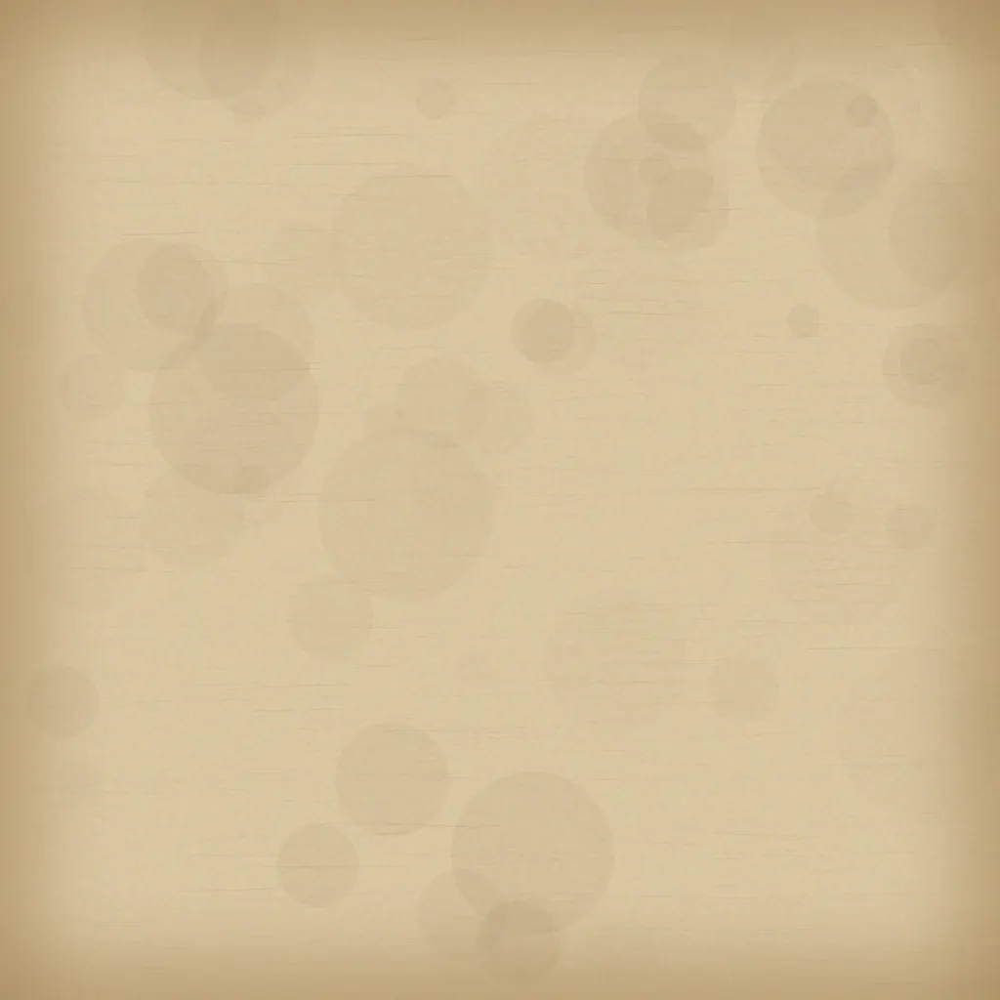

Wood Dark / Base
mithaq-wood-dark-base-color-1024.webpLegal desk, gavel reference, dark editorial material.
Visual contact sheet for P4.06. Assets are locally procedurally generated and source-safe. KTX2 conversion is pending because no local KTX2/Basis encoder is available in this workspace.
mithaq-wood-dark-base-color-1024.webpmithaq-wood-dark-subtle-color-1024.webpmithaq-wood-dark-preview-color-512.webp
mithaq-parchment-aged-base-color-1024.webpmithaq-parchment-aged-subtle-color-1024.webpmithaq-parchment-aged-preview-color-512.webpmithaq-gold-foil-base-color-1024.webpmithaq-gold-foil-subtle-color-1024.webpmithaq-gold-foil-preview-color-512.webpmithaq-leather-dark-base-color-1024.webpmithaq-leather-dark-subtle-color-1024.webpmithaq-leather-dark-preview-color-512.webp